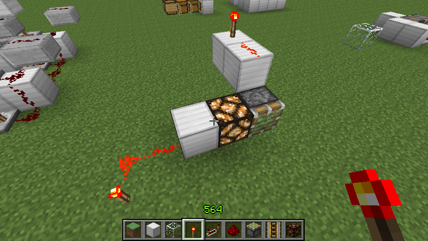

首页
上一页
221
222
223
224
225
226
226
227
228
229
230
231
下一页
末页
defanive2
无尽黑夜
14
今天准备修改MCLive
准备把image.ocx扔掉，自己用gdi+写png渲染的部分
准备增加压缩成jpg的功能，网速较差的同学应该会好用多了
PS 微软应该把gdi+的API文档都写全了
虽然给C/C++封装好了类，但是其他语言也要用啊喂 = =
15414楼
2013-04-06 08:36
defanive2
无尽黑夜
14
来测试一下JPG压缩，低画质
——来自 MCLive
15417楼
2013-04-06 10:21
defanive2
无尽黑夜
14
重新修改了一下压缩设置
这副测试图片大小为854x480
现在是JPG低画质的效果，稍微有点失真
在各种压缩设置下的大小：
JPG低画质：16.9KB
JPG中画质：25.5KB
JPG高画质：36.2KB
PNG原画质（不压缩）：43.2KB
因此如果网速比较慢的同学，可以调到低画质
这样上传图片应该就比较快了
——来自 MCLive
15421楼
2013-04-06 10:41
defanive2
无尽黑夜
14
MCLive更新1.4.0了！
摆脱image.ocx，增加JPEG压缩，增加发送后删除，增加自定义热键，增加KZ值错误报警
用MCLive直播的同学赶快更新吧
15427楼
2013-04-06 11:23
defanive2
无尽黑夜
14
——来自 MCLive
15455楼
2013-04-07 14:56
defanive2
无尽黑夜
14
最近几天发生了不少事情，心情也不是很好
码完修改好了MCLive之后就没有继续直播了
不过半夜睡不着，玩了一下1.5的红石
电路方面有了点新发现，来直播分享一下
15456楼
2013-04-07 14:59
defanive2
无尽黑夜
14
= =
——来自 MCLive
15457楼
2013-04-07 15:03
defanive2
无尽黑夜
14
接15457L
如果大家还记得的话，在做树场V2时用到了这个电路
由于BUD效应，需要加上红石灯给活塞提供更新
而在旧版里有时更新会延迟1tick才进行
因此电路延时上会有一些问题
也导致了某些同学的活塞有几行无法收回
15458楼
2013-04-07 15:04
defanive2
无尽黑夜
14
杯具，现在wap贴吧开始进行敏感词检测了
如果有敏感字的话必须输入验证码才能回帖
MCLive也受牵连了，由于目前还不支持验证码
于是有敏感词时就无法发帖了
准备去修一下MCLive，顺便修复一些BUG
15459楼
2013-04-07 15:06
defanive2
无尽黑夜
14
如果大家还记得的话，在做树场V2时用到了这个电路
由于BUD效应，需要加上红石灯给活塞提供更新
而在旧版里有时更新会延迟1tick才进行
因此电路延时上会有一些问题
也导致了某些同学的活塞有几行无法收回
PS 验证码做好了，来试试
——来自 MCLive
15461楼
2013-04-07 16:44
defanive2
无尽黑夜
14
而在1.5更新后，mojang对活塞的BUD效果进行了大修改
现在，更新产生后会进行下一轮更新，然后再继续下一轮
直到所有的更新都被循环完毕
因此，现在同样的电路即使不需要更新源也可以正常工作了
因为上面的活塞就是更新源！
——来自 MCLive
15462楼
2013-04-07 16:47
defanive2
无尽黑夜
14
因此1.5的树场可以进行的第一个改进就是
去掉所有的更新源：红石灯或者栅栏门
在生存里我是用的栅栏门
稍微耗资小，但同时也会带来音效
因此去掉更新源之后，电路就只有活塞的声音了！
——来自 MCLive
15463楼
2013-04-07 16:49
defanive2
无尽黑夜
14
而我们说到这个电路的时候
旧版里由于更新循环不完全和南北法则的影响
有时活塞无法推出，需要在OFF时才能迅速推出
而1.5更新后，由于更新循环被彻底完整实现了
整个电路也工作正常了
而且不受朝向的影响！
——来自 MCLive
15464楼
2013-04-07 16:51
defanive2
无尽黑夜
14
由于不再有更新的问题
旧版时为了能推出，有些延时间隔被调成了3tick而不是2tick
1.5更新后再也不用考虑这个问题了！
于是整个电路的延时间隔都可以调为2tick
整个电路的最大延时从11tick降低到了8tick！
——来自 MCLive
15465楼
2013-04-07 16:54
defanive2
无尽黑夜
14
旧版里，注意到中间推木头的2推拉活塞
只能用中继器对左右的泥土列进行充能
而由于在生长区无法使用红石灯或栅栏门进行更新
因此被迫使用两列泥土
——来自 MCLive
15466楼
2013-04-07 16:56
defanive2
无尽黑夜
14
而在1.5更新后，由于更新循环可以完整进行了
因此两列泥土只需要右侧一列即可！
而且，这一列泥土可以由右侧的2推拉活塞组提供
而左侧的空间可以提供另外一个能源
这样活塞就能把泥土给拉回来
进一步提高了可以处理的树叶空间！
——来自 MCLive
15467楼
2013-04-07 16:59
defanive2
无尽黑夜
14
最后把这个想法实现了之后的效果
能处理更加多的树叶了！
——来自 MCLive
15468楼
2013-04-07 17:00
defanive2
无尽黑夜
14
俯视图，非常不错
对比修改前的树场，可处理的树叶体积更加大了！
修改前树种回收率约为1.8，也就是平均消耗1个树种可以获得1.8个
修改后回收率约为2.2！
PS 还未进行大批量测试
不过回收率大于2是肯定的
——来自 MCLive
15469楼
2013-04-07 17:07
defanive2
无尽黑夜
14
整个电路最关键点在于
右侧2推拉活塞组和中间的配合
——来自 MCLive
15470楼
2013-04-07 17:11
defanive2
无尽黑夜
14
此时要把木头推出，就必须要给活塞充能
而要给活塞充能就缺少一列的实体方块
——来自 MCLive
15471楼
2013-04-07 17:12
defanive2
无尽黑夜
14
此时右侧处理树叶的2推拉活塞组就提供了一列实体方块
这样就做到了处理树叶的同时，把树干推了出去
而且这样多了一列空间给树叶成长
因此也提高了树种回收率
——来自 MCLive
15473楼
2013-04-07 17:14
defanive2
无尽黑夜
14
在旧版里做到这步就无法做下去了
——来自 MCLive
15474楼
2013-04-07 17:15
defanive2
无尽黑夜
14
而在1.5更新后，由于更新循环完整进行了
仅需右侧一列中继器即可完成充能
因此左侧就腾出了电路空间
就可以实现把泥土收回的功能了
由于内侧的树叶数量比外侧的多
因此也进一步的提高了树种回收率
——来自 MCLive
15475楼
2013-04-07 17:17
defanive2
无尽黑夜
14
因此最终就实现了这个版本的树场V2
可以说是效果极佳，非常接近完美了
准备明天就把生存里的树场V2也如此改造
——来自 MCLive
15476楼
2013-04-07 17:20
defanive2
无尽黑夜
14
好吧今天就直播到这里了
一会准备把更新后的MCLive给发布了
然后就去睡觉
明天再把生存里的树场V2也改造好
——来自 MCLive
15477楼
2013-04-07 17:22
defanive2
无尽黑夜
14
MCLive更新1.4.2了！
现在直播支持输入验证码了，因此如果有敏感词需要输入验证码的话也不怕了！
同时增加了一些小功能，修正了一些BUG
15478楼
2013-04-07 17:53
defanive2
无尽黑夜
14
临睡前简单说一下，1.5更新后
红石灯和栅栏门都无法给活塞提供更新了
因此想要靠这个方法激活BUD效应是不行了
——来自 MCLive

15479楼
2013-04-07 18:00
defanive2
无尽黑夜
14
同样的，栅栏门也无法提供更新了
——来自 MCLive
15480楼
2013-04-07 18:01
defanive2
无尽黑夜
14
不过这也并不是想要利用BUD效应的末路
动力铁轨仍然可以提供更新的
也就是说动力铁轨BUD也仍然可用
因此依靠BUD效应的旧设计仍然可行
只不过要把红石灯等换成动力铁轨
PS 动力铁轨下方必须是实体方块
因此某种程度上还是削弱了这种设计的用途
——来自 MCLive
15481楼
2013-04-07 18:03
defanive2
无尽黑夜
14
类似的，1.5新出的激活铁轨也可以有类似的效果
生存里可以根据矿物储量
选择使用动力铁轨或激活铁轨
——来自 MCLive
15482楼
2013-04-07 18:05
首页
上一页
221
222
223
224
225
226
226
227
228
229
230
231
下一页
末页